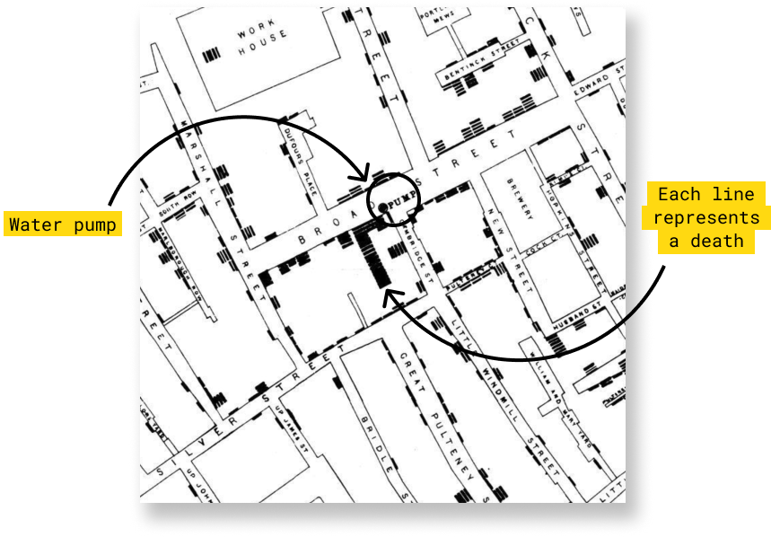

John Snow's map of cholera outbreaks from nineteenth century London changed how we saw a disease - and gave data journalists a model of how to work today

How often does a map change the world? In 1854, one produced by Doctor John Snow, altered it forever. In the world of the 1850s, cholera was believed to be spread by miasma in the air, germs were not yet understood and the sudden and serious outbreak of cholera in London's Soho was a mystery. So Snow did something data journalists often do now: he mapped the cases.
.webp)
Many of the things Snow did when he build his map were not new. But, as Michael Friendly and Howard Wainer explain in their book A History of Data Visualization & Graphic Communication, the novelty was the connection between the graphic representation and the search for a logical explanation for the cause of the disease.
Without visualizing the data on the map,it would have been difficult to realize that most cholera deaths were clustered around a single pump.Snow's research paved the way for data visualization as a tool for statistical analysis.